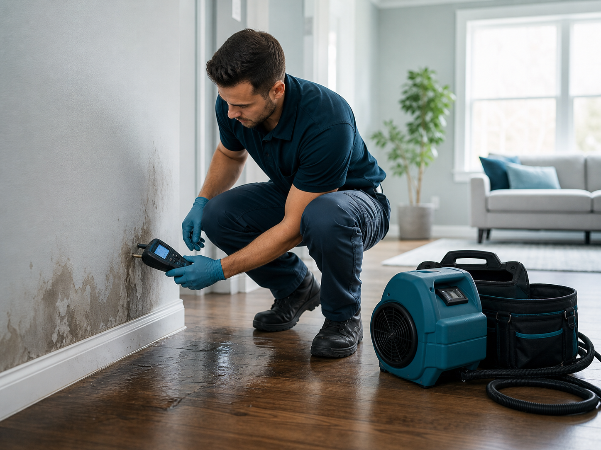

Compare before choosing
Use service categories and provider questions to compare fit, availability, written scope, and documentation expectations.

The platform helps users request information, describe water damage situations, and connect with independent local companies. It is designed to make the early decision process calmer and easier to scan.
Provider availability may vary by location and time. Each provider is responsible for its own licensing, insurance, estimates, work, and terms.
Use service categories and provider questions to compare fit, availability, written scope, and documentation expectations.
Ask each provider for license, insurance, written pricing, exclusions, arrival window, and direct work terms.
Save photos, moisture notes, estimates, invoices, and conversations so decisions are easier to review later.
does not perform restoration work. It helps you organize the situation and connect with independent providers who may be available in your area.
Note the water source, affected rooms, visible materials, odor, active leaking, and safety concerns.
Match the situation to categories like extraction, structural drying, hidden moisture, basement damage, or ceiling leaks.
Ask local companies about inspection timing, equipment, written estimates, documentation, and work terms.
The platform does not employ restoration crews, perform repairs, guarantee results, or replace homeowner due diligence. The selected independent provider is responsible for its own work.
No. helps users connect with independent local providers.
Homeowners, property managers, commercial owners, and rental property owners can use it to compare local provider options.
Ask about licensing, insurance, arrival window, written pricing, exclusions, drying documentation, and direct provider terms.